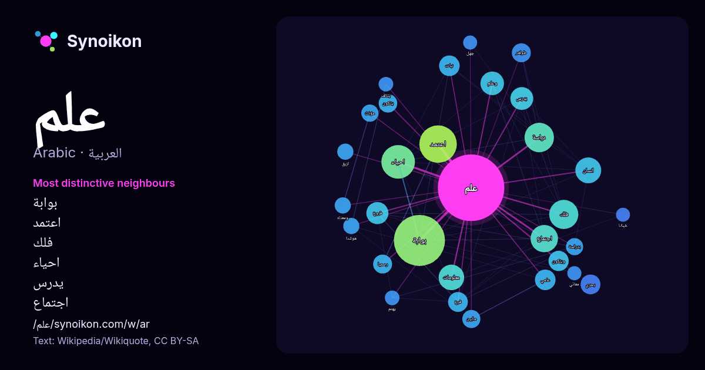

العربية · كلمة شائعة
علم
“science” · الكلمات الموجودة حولها في 1526 ورودًا من ويكيبيديا, Wikiquote.

الجيران الأكثر تميّزًا
- بوابة 119×
- اعتمد 70×
- فلك 35×
- احياء 34×
- يدرس 28×
- اجتماع 26×
- وعلم 24×
- ويتكون 22×
- فروع 22×
- ظواهر 19×
- مابين 19×
- مؤنث 18×
- بدراسة 17×
- رسميا 16×
- نبات 16×
- بحري 16×
- ومعناه 16×
- دراسة 16×
- فرع 15×
- يتكون 13×
× = كم مرة أكثر مما في نصوص ويكيبيديا العامة.
الجيران الأكثر تكرارًا
- بوابة 160
- اعتمد 86
- احياء 69
- دراسة 53
- فلك 52
- ولاية 51
- اجتماع 46
- اسم 42
- انسان 41
- معلومات 40
- جمهورية 36
- وعلم 34
- يدرس 32
- فروع 30
- موقع 30
- علوم 29
- عربي 28
- عامي 26
- نبات 26
- رسمي 25
في السياق
- العِلْـمُ (الجمع: العُلوم)، (اللاتينية: Scientia) أي «المعرفة» هو أسلوب منهجي لبناء وتنظيم المعرفة في صورة تفسيرات وتوقعات قابلة للاختبار.(1)(2) يرتكز Wikipedia snippets · علم
- الجُغْرَافيّة أو الجِغْرَافيّة أو الجُغرافيا أو وصف الأرض أو عِلْمُ المَعالِم هي علم يدرس فيها وصف الأرض من مظاهر عمران بيد البشر وهي المعالم (جغرافية) Wikipedia snippets · جغرافيا
- التسمية المؤقتة في علم الفلك هو طريقة اصطلاحية لتسمية الأجرام السماوية فور اكتشافها. يتم وضع التسمية الدائمة للجرم حالما يتم حساب مداره حسابا موثوقا. Wikipedia snippets · تسمية مؤقتة في علم الفلك
- الفَلَك أو عِلْمُ الفَلَك هو علم طبيعي يدرس الظواهر الفلكية والأجرام السماوية. يستخدم علم الفلك الرياضيات والفيزياء والكيمياء لشرح أصل وتطور تلك الظواهر Wikipedia snippets · علم الفلك
- قائمة مصطلحات علم الفيروسات تضم هذه القائمة مجموعة من المصطلحات مترجمة من الإنجليزية إلى العربية مدخل إلى الفيروسات بوابة علم الفيروسات Wikipedia snippets · قائمة مصطلحات علم الفيروسات
- 2015-09-15. علم ولاية منيسوتا مابين عامي 1957 - 1983 علم ولاية منيسوتا في كومنز مواد ذات صلة بـ علم منيسوتا. بوابة الولايات المتحدة بوابة علم الشعارات Wikipedia snippets · علم منيسوتا
- بعنوان علم الحركة. إذا وصلت لهذه الصفحة عبر وصلة داخليّة، فضلا غيّر تلك الوصلة لتقود مباشرة إلى المقالة المعنيّة. قد يُقصد من «علم الحركة» ما يلي: علم الحركة: Wikipedia snippets · علم الحركة (توضيح)
- علم الأدوية النفسية العصبية (الإنجليزية: Neuropsychopharmacology) هو علمٌ متعدد التخصصات يرتبط بعلم النفس الدوائي (كيف تؤثر العقاقير على العقل) والعلوم Wikipedia snippets · علم الأدوية النفسية العصبية
كلمات أخرى
- أغنية
- إله
- تاريخ
- جبل
- جرس
- جزيرة
- جسر
- حديقة
- حصان
- حقيقة
- حياة
- خبز
- خريطة
- خريف
- ذهب
- زمن
- ساعة
- شاي
- شتاء
- صحة
- صحراء
- صمت
- صيف
- طبيعة
- طريق
- طعام
- ظل
- عائلة
- عاصفة
- عسل
- عمل
- غابة
- فن
- قطار
- قطة
- قلب
- قوة
- كلب
- لغة
- ماء
- مال
- مدينة
- مرآة
- مطر
- ملح
- مناخ
- موت
- نجم
- والدة
حُسبت مسبقًا في 2026-10-09 بالإعدادات الافتراضية (±5 كلمات، مدوّنة متوسطة). يمكن للخريطة التفاعلية تحديثها ببيانات حية.
واجهة مترجمة آليًا؛ نرحب بالتصحيحات.